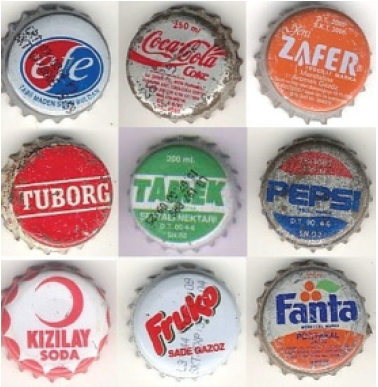

Uçurtma: Birbirine çivilenmiş üç çıta, kenarlarından ip geçirilerek bağlanır ve bu ipler defter kaplarındakine benzer kaplama sistemi ile etrafı çevrilerek, ortaya altıgen bir şekil çıkardı. Bu çıkan şeklin uç tarafına, gene defter kapları ya da işe yaramaz kâğıtlar, gazeteler şerit halinde kesilerek, uzunca bir kuyruk yapılırdı.
Uçurtmada esas olan dengeyi sağlamak idi. Kuyruğun boyu uçurtmanın ebatlarına bağlı olarak değişirdi. Hatırladığım kadarıyla, kuyruk ne kadar uzun olursa, uçurtma da o derece güzel olur ve havada kalma süresine de etki ederdi. Bir kısa çıtaya ip takılır, yüzlerce metrelik ip, o çıtaya öyle bir sarılır ki, bir sanat eseri ortaya çıkardı. Türlü renk ve şekillerde olan uçurtmalar, ne kadar yükseğe çıkarılırsa, o derece uçurana zevk verir ve hava atmasına vesile olurdu.
Hele ki, uçurtmasına selam verdirebilenlerin havasından geçilmezdi. Yapımından, uçurma safahatına kadar bir protokol havasında geçen bu olayda, küçüklerin büyüklerden yardım istemeleri en normal karşılanan hallerdendir.
Bir şenlik havasında geçen uçurmak için birinci yol, uçurtmayı yüzüstü yere yatırıp, sonra hızlı bir şekilde koşmaktır. Bu yolda birinden yardım almanız gerekmez. İkinci yol ise, bir arkadaşınızdan yardım almaktır. Arada belli bir mesafe bırakarak, siz ipi tutar gene koşardınız, arkadaşınız ise, uçurtmayı tutar, siz bırak deyince bırakırdı. Elinizdeki kalan ipten ne kadar yükseğe çıkardığınızı az çok tahmin ederdiniz.
Şu tür laflara rastlamanız sıradan bir şeydi; “Abi var ya, öyle güzeldi ki, emin ol ip daha uzun olsa iki yüz metre daha giderdi he!”, “Oğlum o zaman atmosferi geçer, yanardı be!”
Sapan: Bulaşık eldivenleri bu oyuncağın üretiminde çok önemli bir malzemeydi. İşin biraz daha profesyonelce olanında malzeme olarak serum kullanılırdı.
Bir ağaçtan kesilerek elde edilen çatal, bu lastikler bağlanır, çatalın ortasına gelen kesime bir deri, iki tarafından kesilerek bağlanırdı.
Kullanım alanı için bir sınırlama yoktu, ama tavsiye edilen en uygun yerler, boş bir alana doğru atılanıdır. Genelde hayal edilen bir kuş vurmaktır, ama bu pek görülen bir durum değildir. Hoş vurulan olsa da vicdan azabı çekilirdi. Bu yüzden kendi imalatımız olan bu sapanları, uzağa atma yarışlarında ya da kurbağa, kertenkele avlamak için kullanırdık.
Bilyalı (Tornet): Değişik adlarla anılır. Tornet olarak da bilinir. Scooter’ın ilkel örneği, atası, öncülü denebilir.
Türk insanının neler yapabileceğinin kanıtıdır. Üç-dört bilye ve bir tahta ile böyle bir oyuncak icat etmişizdir. Seksenli yılların en önemli oyuncaklarındandır. Ancak tabii tehlikeli de bir alettir. Yokuş aşağı bırakması en zevkli ve tehlikeli olanıdır. Sürüş teknikleri vardır bu aletin. Ben fazla kullanmadım ama ne derece zevkli bir şey olduğunu biliyorum.
Boru-Külah (Tüf-Tüf): O zamanlar her yerde yeni inşaatlar yapılıyordu ve burada teller, kabloları muhafaza etmek için plastik borular olurdu. Bu plastik borulardan mamul silahlar yapılır ve kâğıttan külahlar üreterek, bu silahlara mermi hazırlanırdı. İşi iyi bilenler ve abartanlar vardı aramızda. Bazı fazla şımarıklarımız külahların ucuna iğne takar, kimileri de üst üste birkaç borudan dürbünlü, çok gösterişli silahlar yaparlardı. Bir keresinde arkadaşlardan biri böyle gösterişli bir silah yapmış diğeri de ona “Kesin Amerikan yardımı almıştır bu,” diye takılmıştı. Evlerin açık olan pencerelerinden içeri bu külahlar atılır, konu komşu pek kızardı bu işe.
Çivi: Bizden sonraki kuşağın bu oyunu oynama şansı kalmamıştı. Ortalık o kadar beton oldu ki çivi saplamaya uygun bir yer bulmak imkânsız artık.
Kedileri örnek verip dururlardı bize küçükken, “Bak kedi bile pislediği yerin üstünü örtüyor,” diye. Ancak şimdi kediler pisliklerinin üstünü örtemiyor çünkü ne bir toprak görebiliyor ne de bir yaprak.
Gelelim çivi oyununa; herhangi bir yere düz bir çizgi çizilerek, oyuncuların o çizgiye en yakın gelecek şekilde çivilerini saplamaları gerekirdi oyuna başlamak için. Malzeme temininde başvurulacak yer, yine inşaatlardı. V,Y,X gibi harfler ve başka şekiller içine bunların temsilcisi oyuncular hapsedilmeye çalışılırdı. Bir de yılan şekli çizilir, bu çizgi içine atılan çivilerle atılan yerden yeni yere çizgiler çizilirdi. Kenarlara değmemesi gerekirdi. Kenara değerse, yanardınız ve sıra diğer arkadaşınıza geçerdi. Hey gidi güzel günler, diyorum.
Çivili Futbol: Bir futbol sahasını andıran yapısı ve küçültülmüş ölçüsü ile sehpa üzerine konuşlandırılarak oynanabilen bir oyundu. Bir tahta üzerine saha çizimi yapılır, oyuncuları temsilen tahtaya çiviler çakılırdı. Bir bozuk para ile ki bu genelde bel lira idi, kaleye gol atılmaya çalışılırdı. Avut ve taç atışları çok güzel olurdu. Yalnız biraz parmakları acıtır, ara sıra yaralanmalara neden olurdu. İlkel bir oyuncaktı, ama en azından yaratıcılık vardı diyebiliriz.
Ayna Yansıtmak: Ne kadar saçma görünse dahi bu da bir oyun sayılabilir. Elinize aldığınız bir küçük ayna ile karşı komşuların evine ya da gözlerine güneş ışığının yansımasını tutardınız, ne gariptir ki eğlenceli gelirdi. Gerçi buna garip derken, şu lazer ışıklı ve göze çok daha zararlı ve sadece güneş olunca değil, her zaman kullanılabilir aletten çok daha masum olduğunu söyleyebilirim. Ancak, anneler ve yaşlılar bizi kandırmak için “Yapma çok ayıp” gibi şeyler söylerlerdi ve ben bunu anlamazdım.
Dekman: Silah yerine elinize bir tahta parçası alıp, önünüze geleni öldürdüğünüz, ama kimsenin ölmeyi kabul etmeyip sürekli problemlerin yaşandığı bir oyundur. “Hadi oğlum kovboyculuk oynayalım,” diyerek başlanan bu oyundaki “Dekman” tabirinin nereden geldiği tam olarak bilinmemekle birlikte, silah sesini temsilen söylendiği düşünülebilir.
En fazla oynanan oyunlardan biriydi. Kızlar da bu oyunlara katılır, ya hemşire olur vurulanlara yardım eder ya da onlar da ellerine bir şeyler alarak düşmana taarruz ederlerdi. Çok komik diyaloglar olurdu. Mızıkmak, daha doğrusu oyundan çıkmamak için kimse vurulmayı kabul etmez, sürekli “Hayır, sıyırdı işte”, “Yok kolumdan vuruldum, ölmedim,” gibi laflar söylenip dururdu. Nasıl bir iş ki bu, hayali bir kurşunun yönü konusunda bile yorum yaparsın? Neyse vurulmuş olduğunu kabul edenleri, silah arkadaşları gelip dokunmak suretiyle kurtarabilirlerdi. Ben onca dekman oynadım ama birilerinin yüzünden oyun hep yarım kalırdı. Daha tamamlanmış bir dekman görmedim.
Evcilik: Bu evcilik oyunu kız çocukları tarafından oynanır. Öğretilmez. Eğer kız çocuğuysa zaten bu donanımla doğar, büyür ve gene belki de farkında olmadan evcilik oynarken ölürler.
Evcilik, esasında sonuna şuculuk, buculuk gelen oyunların genel ismi olmalı diye düşünüyorum. Sebebine gelince; doktorculuk, öğretmencilik vb. oyunlar hemen aynı şeyleri temsil eder.
Hayal dünyasında olup biten bir düzen ve orada dağıtılan roller söz konusudur. Yani eğer evcilik oynayacaksanız biri anne diğeri baba, çocuklar, veya bakkal, manav rolü neyse, doktorculukta da durum aynıdır. Tabii doktor-hemşire oyununda biraz erotizm olabilir. (ki bu sonradan yapıştırılmıştır)
Gazoz Kapağı: Kıtlık yıllarıydı... yokluk her yerde kol geziyordu... oyuncak namına hiçbir şey yoktu... o yüzden gazoz kapaklarını biriktirir onlarla oynardık desem inanır mısınız? Bunların hepsi yalan sayılır. Ama bu gazoz kapağı gerçekten ilginçtir.
Çay bahçeleri yakınlarında, büfe önlerinde, her yerde gazoz kapakları yerlerden toplanır ve bunlarla çeşitli oyunlar oynanırdı. Bu kapaklar çeşitli hareketlerle düzleştirilir, ki¬mi tren raylarına koyar, kimi çekiçle düzeltir ve sonra yere dikilip misketle vurulacak hale getirilirdi. Şimdi düşünüldüğünde “Yahu bu çöp!” diyebileceğimiz bu malzemeler o günün çocukları için çok değerli oyuncaklardı. Ta ki yaklaşık bir sene sonra “Gazoz Kapağı Zamanı” gelene kadar.

Misketle oynanılanın haricinde bir de kapakların içleri çamur doldurularak, parmakla itilerek oynananı vardı. Gazoz kapakları da markasına ya da az bulunur olanına göre değerli olurdu. Misal: iki soda kapağı bir Meysu kapağına denk gelirdi. Böyle bir ticaret vardı işte. Hatırladığım kadarı ile en değerli kapaklar Schweppes şişelerinin kapaklarıydı.
Kitaplara Para Atma: O dönemin en kumarbazları tarafından oynanırdı. Çeşitli hile hurda ile kitapların -ki bu kitaplar Tommiks, Teksas dediklerimizdi- üzerleri çok kaygan hale getirilir, belli bir uzaklıktan bozuk paralar atılarak kitabın üstünde durması sağlanmaya çalışılırdı. Eğer atılan para durmazsa, kitap sahibi atılan parayı, durursa parayı atan kitabı alırdı.
Kitap sahipleri, kapakları o kadar değişik yollarla kaygan hale getirmeye çalışırlardı ki, işte size birkaç örnek; kasaptan kuyruk yağı alınır, kitap kapaklarına sürülür, bazıları pudra kullanır, bazıları cila, mum sürüp kadife ile kayganlaştıranlar da vardır.
Kronometre Durdurmaca: İşte biz çocuklar o zamanlar ne oynayacağımızı şaşırır, onca oyun yetmezmiş gibi, böyle absürd şeyler de çıkarırdık başımıza.
Süpersonik! saatlere sahip olduktan sonra ne yapacağımızı şaşırmıştık. Kronometreyi durdurma yarışmaları yapardık. Başlattıktan sonra hemen durdurur, “00.03’ de tuttum,”, “Ohoo ben kazandım baaak 00.02’de durdurdum,” gibi ünlerdik. Nefes tutabilme rekorları kırmaya çalışır, özel numaraları saat üstünde görmek için defalarca deneme yapardık. Saçma şeylerdi, ama çocukluk işte.
Lastik Atlama: Bu oyunu oynamayan kız çocuğu yoktur herhalde. Kız olmanın bir amacı da küçükken lastik oynamaktır. İlkokul yıllarında her teneffüs zili çaldığında, onlarca öbek, öbek kız grupları toplanır bu lastiklerin bazen üstüne basarak, bazen aralarında zıplayarak bir şeyler yaparlardı. Sanıyorum okula gidiş amaçları da esasta lastik oynamak içindi.
Biz erkeklerin vazifesi ise bunların oyunlarına karışarak bozmak ya da uzaktan seyredip, bunlar ipi yukarı çıkartıp, atlamayı güçleştirdikçe, yanımızdaki arkadaşı dirsekleyerek, “Aha lan göründü,” demekti.
Bu yaşa geldim, boyu benden 50 cm. kısa olan bir kız çocuğu ile o lastik oyununda baş edemem. Nasıl bir teknik geliştirmişler, bilmem. Boyunlarına gelen yerlerde bile o ipin üstünden atlayabiliyorlardı.
Benim de denemişliğim vardı bir ara. Hatta üç beş sene önce kapımızın önünde yine kız çocukları toplanmışlar, lastik oynuyorlardı. “Ben de oynayacağım,” deyince şaşırdılar, gülüştüler. Ondan sonra tabii tek bildiğim lastik atlama oyunu “İs-tan-bul-lular”ı oynayarak, bu küçük kız çocuklarına bir şov yaptım. Çok eğlenmiştiler koskoca adamı zıplarken görünce.
Limon: Dışarıda bir ebe olur, elindeki limon ya da o ayarda başka bir nesneyi ayrı daireler içerisine konuşlanmış oyunculara bel seviyesinde atar, oyuncular da o nesneyi, kafa ya da ayak vuruşlarıyla dairelerinin içine düşürmemeye çalışırlardı. Hareketli, güzel oyunlardan biriydi. Vücut gelişimini sağlar, top tekniğini geliştirmeye iyi gelirdi. Bundan ziyade daha önce de söylediğim şeylerden bir örnek vardır bu oyunda. Yani kullandığımız malzeme, sıkılmış bir limon kabuğuydu sadece. Biz bu kullanılmış limonla saatlerce oyun oynar, sert bir oyun olmasına rağmen o limonu bile zedelememek için uğraşırdık.
Mandalina Kabuğu: Bu oyun da sert sayılabilecek oyun türlerinden biridir. Parmaklar arasına geçirilen lastik gerilerek, ufak mandalina, portakal gibi meyve kabuklan atılır, karşıdakilerin etleri şişirilmeye çalışılırdı.
Mendil Kapmaca: İki takım oluşturulur, ortada mendili tutan biri vardır. İki rakip taraf aralarına epeyce uzun bir mesafe bırakarak dizilirler. Sıradakiler isimleri söylenince hızlıca koşar, mendili yakalayıp arkadaşlarının yanına gelmeye çalışırlar. Fakat hızları birbirine denk olan rakipler, mendili alma aşamasında birbirlerini yoklarken, sınır olan mendil tutucunun durduğu yerden karşı takım tarafına geçerlerse, diğer taraf kazanmış olur. Esas olan mendili hızlıca kapıp, arkadaşlarının yanına diğeri ona dokunmadan koşmaktır.
Para Maçı: Üç adet bozuk para, masa ve iki kişiden mütevellit bir kadro bu oyun için yeterlidir. Üç adet para, parmak ucuyla vurulmak suretiyle, ortadaki para diğer ikisi arasından geçirilmek ve ilerleyerek ya da uzaktan şut vurarak, kale görevi yapan iki parmak arasından gol atılmaya çalışılırdı.
Bu oyunun bir de eşli olanı vardı. Burada takım arkadaşınız paraya döndürerek vurur, siz de bu paraya üfleyerek yön vermeye çalışırdınız. Garip bir oyundu ama zevkliydi.
Sek Sek: Kız çocuklarının tercih ettiği oyun çeşidi olan sek sek, birkaç türlü oynanırdı. Yere tebeşirle kutucuklar çizilir, içinde rakamlar vardır. Ayak çizgilere gelmeyecek şekilde tek ayakla, o kutuları içine atlayışlar yapılırdı. Zıplarken çok komik görüntüler ortaya çıkar, becerikli olanları ise seyretmek zevkli olurdu. Mermer taşları ile oynanır, ayakla itilen mermer, diğer kutulara geçmeyecek şekilde ayarlanmaya çalışılırdı.
Yağ Satarım, Bal Satarım: Halka oluşturan bir sürü çocuk olur ve usta olan kişi bunların etrafında dönerken, “Yağ satarım, bal satarım ustam öldü ben satarım,” diye bir tekerleme söylerdi. Dönen kişinin elinde bir mendil olur ve bu mendili sinsice birinin arkasına bırakırdı. Mendil arkasında olan kişi durumu anlayınca, kaptığı gibi ayaktaki oyuncunun peşine düşer ve o yerine geçmeden önce ona dokunmaya çalışırdı. Neşeli bir oyundu, katılımcı sayısı ne kadar çok olursa, eğlence dozu da o derece artardı.
Yılan: Yere tebeşirle ya da duruma göre başka bir madde ile yılana benzeyen kıvrımlı bir şekil çizilir, içi çamurla doldurulmuş gazoz kapakları olur ve bu gazoz kapağı, çizgiler geçilmeyecek şekilde yılanın içinde gezdirilirdi. Gazoz kapakları, kayganlıkları artsın diye taşlara, mermerlere sürtülürdü.
Beş Taş: Birbirine denk boy ve ağırlıkta taşlardan biri havaya atılır ve yerde kalanlar havadaki taş düşmeden elle toplanmaya çalışılırdı. Taş sayısını abartanlar vardı. Genelde kız çocukları tercih ederdi bu oyunu. Öyle Taso maso olmadığı zamanlarda en güzel oyunlar bunlardı. En azından bir emek vardı.
Çelik Çomak: Yere bir çukur kazılır, iki çubuktan küçük olan parça, çukurun üzerine konur ve daha uzun olan çubuk-sopa- ile bu küçük çubuk parçası çukurdan havaya kaldırılıp sopayla vurulur ve en uzağa atılmaya uğraşılırdı. Daha sonra bu küçük çubuk, diğer oyuncu tarafından yine yerden kaldırılarak, başlanan noktaya geri götürülmeye çalışılırdı. Devamında ne vardı tam hatırlamıyorum eldeki sopayla bir şeyler ölçülür, sonra ilk vurucular değişirdi. Ben oynamış ve büyük zevk almış biri olarak o kadar uzak kalmışım ki unutmuşum bile. Yeni nesillerin bu tür oyunları hiç bilmemesi ya da bizim öğretmememiz ne kadar acı ve ne kadar ayıp bir şey.